Введение в курс: основные понятия, определения и инструменты
В этом курсе мы будем создавать интерактивные проекты: веб-приложения, инсталляции, игровые сцены и системы для работы со звуком, видео и внешними устройствами. Инструменты разные, но вопросы общие: откуда приходят данные, что с ними происходит и как человек понимает ответ системы?
Интерактивная система меняет своё состояние или поведение в ответ на действия пользователя и другие входные данные. Эти изменения влияют на дальнейшее взаимодействие.
Автоматическое движение само по себе ещё не означает интерактивность. Генеративная анимация может работать без участия зрителя. Она становится частью взаимодействия, когда, например, положение человека или его выбор меняет правила её поведения.
Как устроено взаимодействие
Источником данных может быть человек, физическая среда, устройство или сеть. Система получает нажатие кнопки, координаты мыши, изображение камеры, звук, расстояние до датчика или сообщение от другого приложения.
Ввод → обработка и изменение состояния → вывод → обратная связь → следующее действие
Ввод и обработка
Сначала система получает сигнал. Затем выделяет нужные данные и применяет правила: например, переводит громкость звука в размер объекта или определяет по изображению камеры, появился ли человек перед экраном.
Состояние
Состояние описывает, что происходит в системе сейчас: какой маршрут выбран, открыта ли дверь, сколько очков набрано, на каком этапе находится пользователь. Это память, к которой обращается обработка, а не обязательный отдельный шаг после неё. Одинаковое действие может дать разные результаты в разных состояниях.
Вывод и обратная связь
Ответом может быть изображение, звук, изменение текста, свет или команда устройству. Обратная связь помогает человеку понять, принято ли его действие и что произошло. Он видит результат и решает, что делать дальше.
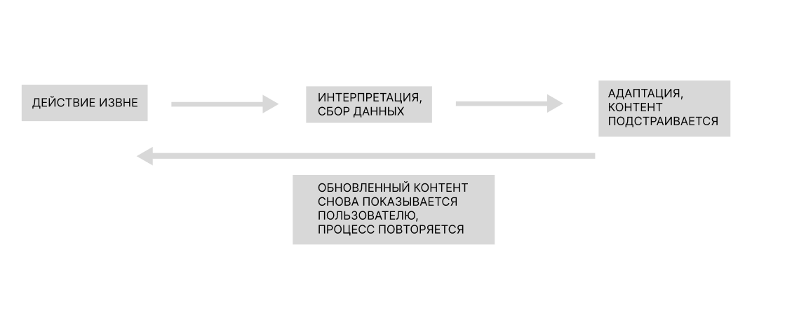
У записанного видео последовательность кадров задана заранее. В интерактивной системе следующий результат хотя бы частично зависит от входных данных. При этом само видео может быть элементом системы: пользователь выбирает фрагмент, меняет порядок просмотра или запускает его действием.
Работа в реальном времени, или real-time, означает, что система обрабатывает данные и отвечает во время взаимодействия. Ответ должен приходить достаточно быстро для конкретной задачи. «Реальное время» не означает отсутствие задержки.
Задержка складывается из получения сигнала, вычисления, передачи данных и вывода. Частота кадров описывает обновление изображения, но не всю задержку от действия до ответа. Плавная картинка может реагировать с опозданием. Для кнопки отправки важно сразу показать, что запрос принят. Для графики, следующей за рукой, важна тесная связь движения и изображения. Для концертной системы важны также стабильность и согласованность со звуком. Поэтому проверяйте проект на том устройстве и в тех условиях, где он будет работать.
Области применения
Искусство
Участие зрителя существовало и до цифровых технологий: в перформансах, хэппенингах и практиках Fluxus действие могло становиться материалом произведения. Для нашего курса важен переход от этой художественной идеи к устройству цифровой среды: какое действие считывается, как оно преобразуется и что участник получает в ответ?
В перформансах и хэппенингах участие зрителя может менять ход произведения. Цифровые инструменты позволяют использовать движение, голос или данные участников как материал. При анализе работы выясняйте, что именно меняется от действий человека и какая часть заранее подготовлена.
В перформансе Dökk студии fuse* движения исполнительницы считываются системой захвата движения и датчиками Kinect и влияют на визуальную среду. Отдельно используется сигнал сердечного ритма. Авторы описывают эти связи в разборе проекта. Здесь заранее построенная драматургия сочетается с живыми данными: реакция системы не отменяет авторской последовательности сцен.
Реклама
Интерактивная реклама предлагает короткое действие: коснуться экрана, пройти игру, выбрать вариант или повлиять на изображение. Участник должен быстро понять, что можно сделать и какой результат он получит. Важны время ожидания, понятность управления и работа при большом потоке людей.
Сенсорная панель и реагирующая на посетителей инсталляция на стенде МТС показывают, как взаимодействие может стать частью рекламного пространства. Другие форматы: интерактивный лендинг, мини-приложение, игра в чат-боте или событийный квест.
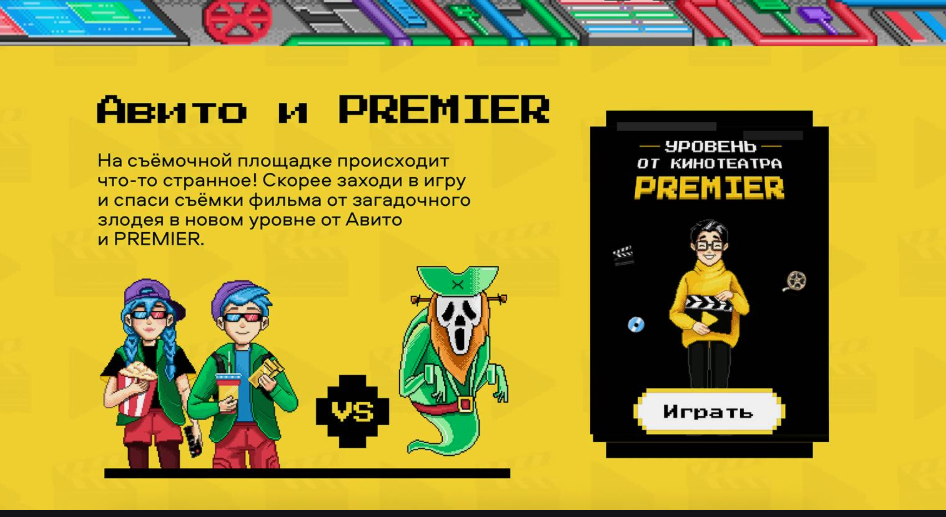
Образование
В симуляторе или виртуальной лаборатории человек меняет параметры и наблюдает последствия. Это помогает исследовать связи, которые сложно показать статичной картинкой. Для учебного проекта нужно определить, что именно пользователь должен понять и как взаимодействие помогает этому.
Minecraft Education позволяет строить учебные задания внутри игрового мира, в том числе по программированию и совместной работе. Образовательный результат зависит от задания и обсуждения, а не только от наличия игры.
Intel CES Experience показывает вовлечение через демонстрацию технологий. Для обсуждения важно отличить запоминающийся опыт от обучения: что человек после участия может объяснить, проверить или применить? Сам факт интерактивности ещё не определяет образовательную ценность.
Музейные практики
В музее интерактивность может помочь выбрать маршрут, сопоставить документы, рассмотреть реконструкцию или исследовать локальную историю. Например, посетитель выбирает период на карте и видит, как менялось городское пространство.
Действие должно помогать работе с материалом. Важно оставить время на чтение, объяснить управление и учитывать посетителей с разным опытом и возможностями. Экран не должен заслонять экспонат или превращать содержание в случайный набор эффектов.
Сценография и театр
Сценическая система может получать звук, движения исполнителя или команды оператора и менять видео, свет и другие элементы. При разработке важно различать реакцию на живые данные и заранее подготовленную последовательность, которую запускают по сигналу.
Для спектакля нужно продумать, кто управляет системой, как согласованы звук и изображение и что произойдёт при потере сигнала. Выразительность реакции зависит не от количества эффектов, а от её связи со сценическим действием.
Веб и цифровые продукты
Браузер подходит для интерактивной карты, цифровой выставки, небольшого симулятора, генеративной графики или игры. Пользователь открывает проект по ссылке. Возможности и ограничения зависят от устройства, браузера, сети и выбранных технологий.
Какие механики можно создать
- Выбор и фильтрация: пользователь выбирает факультет, и на карте остаются связанные с ним корпуса.
- Исследование: посетитель переключает исторические периоды, сопоставляет документы или открывает детали экспоната.
- Симуляция: изменение параметра сразу влияет на модель, график или движение объектов.
- Генеративная графика: положение указателя, звук или другие данные меняют правила построения изображения.
- Совместное взаимодействие: действия нескольких участников отражаются в общем пространстве.
Прокрутка и анимация могут поддерживать эти механики, но нужно объяснить, что пользователь исследует или меняет. Красивый переход между экранами ещё не делает содержательным весь проект.
Событие, состояние, ответ
Событие сообщает, что что-то произошло: нажата кнопка, введён текст, пришёл ответ сервера. Обработчик события выполняет нужное действие. Состояние хранит результат выбора, а интерфейс показывает его пользователю.
Абитуриент выбирает направление → система сохраняет выбор → на карте выделяются нужные корпуса → пользователь открывает карточку корпуса или меняет направление.
У этого проекта есть и другие состояния: данные загружаются, результатов нет, соединение потеряно. Для каждого нужен понятный ответ. Если карта ещё не загрузилась, человек должен видеть ожидание, а не пустой экран.
Как выбрать инструмент для веба
| Инструмент | Для чего подходит |
|---|---|
| HTML и CSS | Структура страницы, текст, элементы управления, оформление и адаптация к экрану. |
| JavaScript | Обработка событий, правила поведения, состояние и работа с данными. |
| SVG и Canvas | Схемы, карты, рисование и динамическая графика. Способ вывода выбирают под задачу. |
| p5.js | Творческие эксперименты с графикой, движением и взаимодействием на JavaScript. |
| Three.js | Трёхмерные сцены в браузере: камера, объекты, материалы и освещение. |
| Сервер и сетевое соединение | Общие данные, совместные сессии и обмен между устройствами, когда этого требует проект. |
Для карты с фильтрами не обязательно начинать с 3D. Для первого прототипа выберите инструмент, который позволяет проверить основное взаимодействие с наименьшим количеством лишней работы.
Что проверить в браузере
- Управление мышью, касанием и клавиатурой. Важное действие должно оставаться доступным без точного наведения.
- Размер экрана и читаемость. Проверьте проект на телефоне, а не только на своём мониторе.
- Загрузку и производительность. Тяжёлая сцена не должна мешать начать взаимодействие.
- Доступ к камере и микрофону. Объясните, зачем они нужны, и предусмотрите отказ в разрешении.
- Работу без звука и понятные сообщения об ошибках. Пользователь должен понимать состояние проекта.
Примеры для просмотра
Онлайн-музей Андрея Сахарова: посмотрите, как устроено исследование материала и как пользователь выбирает путь. Какие действия помогают понять содержание?
Подборка проектов с Three.js: сравните несколько решений. Для чего каждому нужна трёхмерная сцена и что меняется от действий посетителя? Наличие проекта в подборке не означает, что все его приёмы подходят вашей задаче.
Принцип событий можно подробнее разобрать в русскоязычном материале MDN. Возможности библиотек показаны на официальных сайтах p5.js и Three.js.
Когда действие помогает понять материал
Интерактивность полезна там, где человек может проверить предположение. Если результат всегда одинаков и участие ни на что не влияет, красивую реакцию быстро перестают исследовать. Содержательное взаимодействие даёт заметную связь между действием и последствием, а затем позволяет попробовать иначе.
Объяснение, которое можно исследовать
The Evolution of Trust, Nicky Case объясняет сотрудничество через повторяющуюся игру. Пользователь принимает решения и наблюдает, как работают разные стратегии. Здесь правила являются частью аргумента: изменение условий меняет результат. Это повод обсудить границы модели, а не принять её за точное описание любых человеческих отношений.
Что мы понимаем через действие, чего не поняли бы из текста? Какие допущения заложены в модель? Может ли убедительная визуализация скрывать слишком простое объяснение?
Модель вместо готового ответа
В LOOPY можно соединять величины и наблюдать, как изменения распространяются по системе. Это пример того, как диаграмма превращается в исследовательский инструмент. У связи есть направление и смысл, а замкнутый путь создаёт обратную связь.
Для обсуждения полезно сравнить два случая: кнопка открывает справку, а ползунок меняет поведение модели. Оба интерфейса интерактивны, но глубина участия разная. Нужно ли конкретной теме исследование, или ясный доступ к материалу решит задачу лучше?
Один проект в трёх средах
Интерактивную карту кампуса можно сделать в браузере для телефона, в TouchDesigner для большого экрана или в игровом движке как трёхмерное пространство. Содержание остаётся общим, но управление, масштаб и условия показа меняются. В браузере важны загрузка и касание, в инсталляции видимость с расстояния и возврат в ожидание, в игровой сцене ориентирование и камера.
Выбор среды начинается с вопроса, где и как человек будет участвовать. Перенос проекта на другой экран часто требует пересборки сценария, а не только изменения разрешения.
Игровые проекты
Игровой движок помогает собрать сцену, управлять объектами, камерой, физикой, звуком и правилами. Unity и Unreal Engine используют также для симуляторов, виртуальных пространств и инсталляций. Работа с внешними устройствами зависит от доступных библиотек и способов подключения.
Выбор движка оправдан, если для идеи важны пространство, поведение объектов или игровые механики. Веб и визуальные среды тоже могут решать такие задачи. Сравнивайте инструменты по требованиям проекта, а не по границе «веб для кнопок, движок для миров».
AR и XR: когда цифровая сцена выходит за экран
В дополненной реальности цифровой объект совмещается с изображением физического мира. Участник меняет ракурс и расстояние, а система должна удерживать понятную связь между объектом и окружением. VR переносит опыт в виртуальное пространство; XR используется как общее обозначение семейства таких технологий и в контексте расширенной сценической среды.
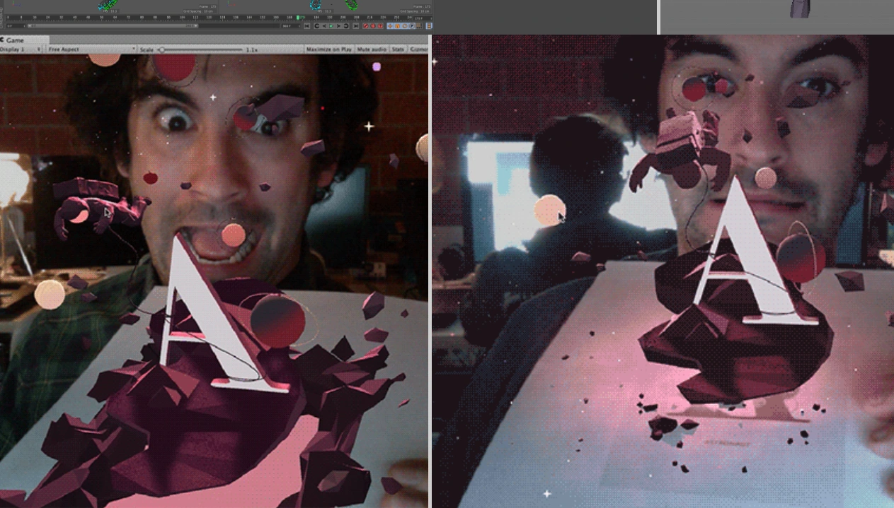
AR Alphabet из исходной лекции помогает обсудить, как типографика становится пространственным объектом. Что здесь даёт изменение точки зрения, чего не даёт обычное видео? Ссылка ведёт к проекту; конкретную техническую реализацию стоит уточнять у автора.
AR BOOK TEST показывает связь печатной страницы и цифрового слоя. Подумайте, как человек узнаёт, что объект можно исследовать, и что произойдёт, если камера потеряет страницу.
Событие Travis Scott в Fortnite можно рассматривать как встречу игрового пространства и концертного показа. Участник может присутствовать в мире, но значительная часть зрелища задана постановкой. Свобода перемещения и возможность менять само событие являются разными видами участия.
Следующий пример показывает XR-постановку презентации. Наличие цифрового пространства не означает, что зритель управляет им: нужно выяснить, кто подаёт сигналы и какая часть изображения рассчитывается во время показа.
Что мы называем средой разработки
Интегрированная среда разработки, или IDE, объединяет редактор кода и инструменты для работы с проектом: запуск, отладку и другие функции. Она помогает писать программу, но не обязательно является местом, где готовый проект будет работать.
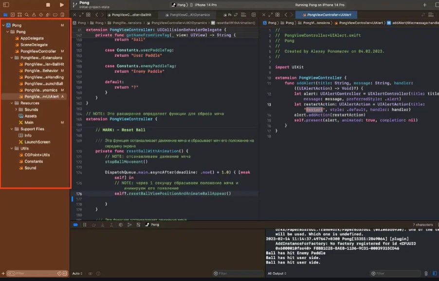
В этом курсе мы используем более широкое понятие: инструменты создания, исполнения и проверки интерактивного проекта. Это может быть редактор кода и браузер, визуальная среда с узлами или игровой движок.
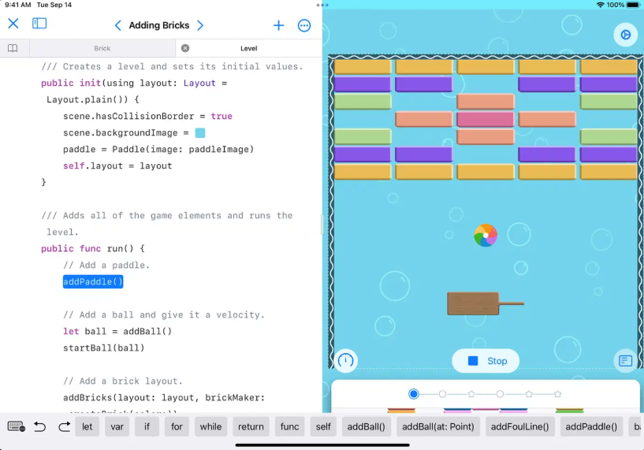
Семь групп инструментов и их роли
Среды удобно сравнивать по основной задаче. Границы между группами проницаемы: визуальная среда может воспроизводить видео, игровой движок принимать звук, а медиасервер получать изображение от генеративного проекта. Но совпадение отдельных функций не делает инструменты взаимозаменяемыми.
| Группа | Основная задача | Что проверять |
|---|---|---|
| Плейаут и медиасерверы | Показ, микширование и распределение медиа | Выходы, синхронизацию, управление и восстановление |
| Визуальное программирование | Построение правил обработки данных и генерации | Типы данных, диапазоны, состояние и нагрузку |
| Игровые движки | Поведение объектов в 2D- и 3D-сцене | Логику мира, управление и целевую платформу |
| Веб и творческий код | Интерактивный проект, доступный по ссылке; исследование алгоритмов | Браузер, ввод, загрузку и производительность |
| Звуковые среды | Синтез, обработку и анализ звука | Время, маршрутизацию и задержку |
| Световые консоли | Управление приборами и ходом световой партитуры | Патч, адресацию, переходы и приоритет управления |
| Предварительная визуализация | Проверку будущего показа в модели площадки | Геометрию, приборы, соединение с управляющей системой |
Плейаут-системы и медиасерверы
Плейаут означает организованное воспроизведение: нужный материал появляется на нужном выходе в нужный момент. Медиасервер может распределять изображение по нескольким экранам и проекционным поверхностям. На площадке важны не только эффекты, но и понятный запуск, синхронизация и возможность вмешаться во время показа.
Resolume подходит для слоёв, клипов и живого микширования; MadMapper специализируется на маппинге и связанных задачах вывода; WATCHOUT и Disguise используются для сложных систем показа. Название d3 из прежних материалов относится к истории Disguise.
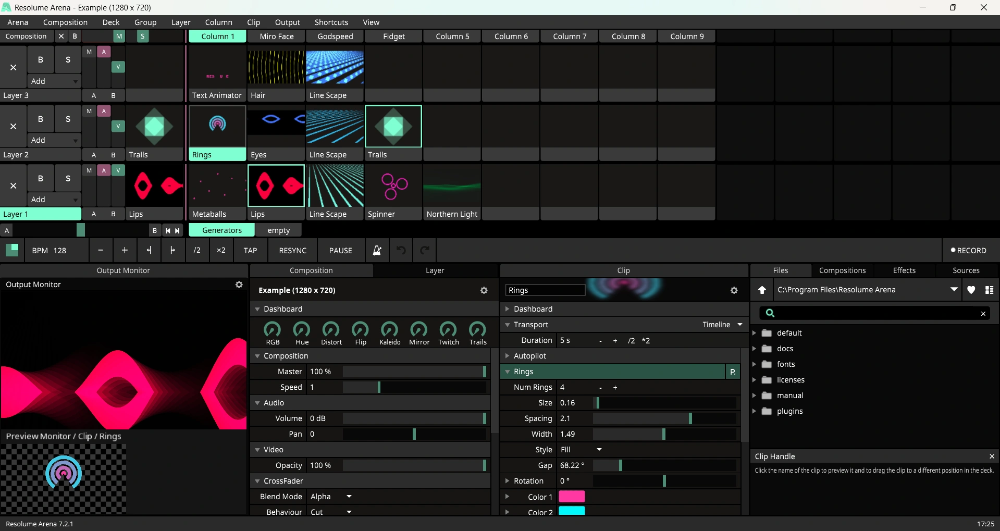
В одном проекте можно сочетать готовые ролики и живую графику. Генеративная система формирует изображение, а система показа адаптирует его к поверхностям. vMix решает прежде всего задачи видеопроизводства, переключения источников, записи и трансляции; его не стоит считать прямой заменой системы архитектурного маппинга. Wire позволяет создавать собственные источники и эффекты для Resolume.
Что должно оставаться управляемым во время шоу, если генеративная часть перестала отвечать? Где проходит граница между созданием изображения и его надёжным показом?
Среды визуального программирования
TouchDesigner, vvvv, Notch и Ventuz позволяют строить поведение через связанные операции. Сеть показывает, откуда приходят данные, как они изменяются и во что превращаются. Для некоторых задач визуальные связи сочетаются со скриптами и шейдерами.
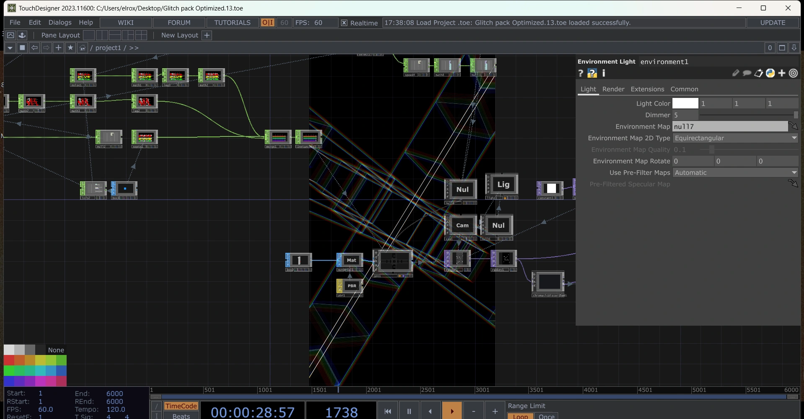
Например, камера даёт изображение, анализ выделяет положение человека, числовое значение меняет графику, а отдельная логика определяет текущую сцену. Подключение оборудования требует проверки интерфейса и формата данных. Видимый провод между нодами не гарантирует, что полученное число имеет нужный диапазон или смысл.
Здесь можно создавать инсталляции, аудиореактивные системы и собственные инструменты показа. Но способность написать такой инструмент ещё не означает готовую надёжность: её проверяют нагрузкой, длительной работой и восстановлением после ошибок.
Игровые движки
Unity, Unreal Engine и Godot организуют проект вокруг сцены и поведения объектов. Камера задаёт точку зрения, компоненты и скрипты правила действий, материалы и освещение внешний вид. Физика, столкновения и навигация используются, когда этого требует идея; реалистичный мир не является обязательным условием.
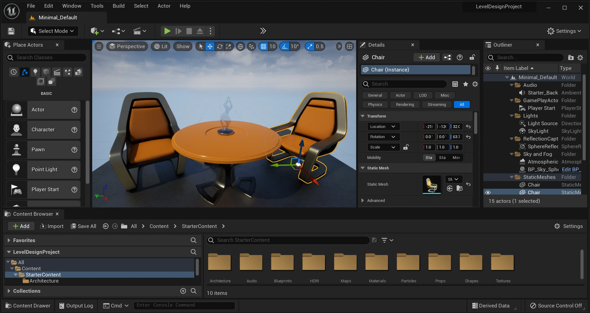
Движок полезен для пространственных историй, симуляторов, VR/AR и интерактивной сценографии. Сборка под несколько платформ требует настройки, адаптации управления и проверки возможностей каждой платформы. Опыт для клавиатуры не переносится в VR только сменой способа экспорта.
Чем отличается изменение объекта в мире от переключения видеоклипа? Как правила пространства помогают участнику понять последствия действий?
Веб и творческое программирование
HTML и CSS задают структуру и оформление, JavaScript поведение. Canvas и SVG подходят для графики, WebGL и WebGPU для аппаратно ускоренных задач при поддержке выбранного браузера. Three.js упрощает работу с трёхмерной сценой. Возможности камеры, микрофона и MIDI зависят от разрешений и совместимости.
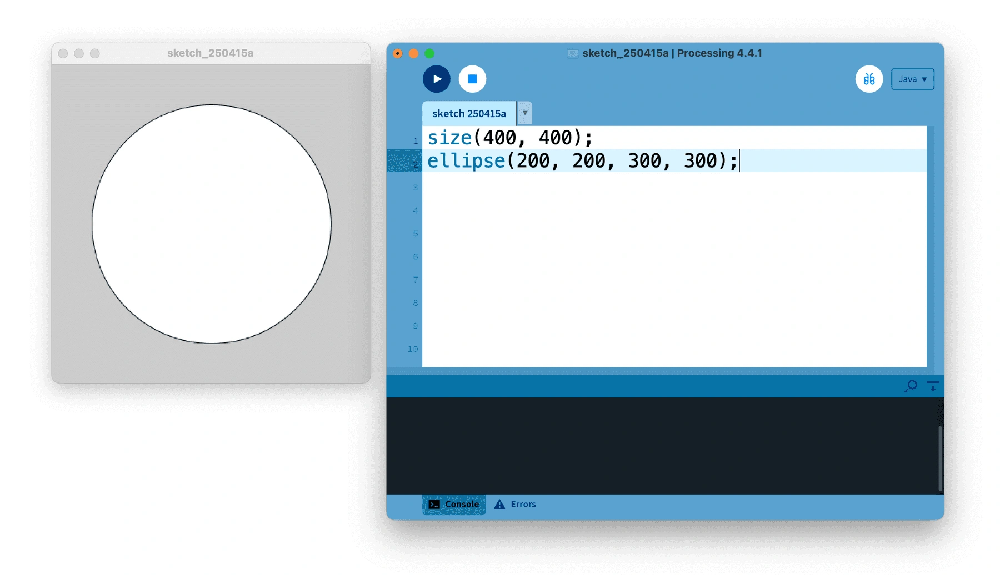
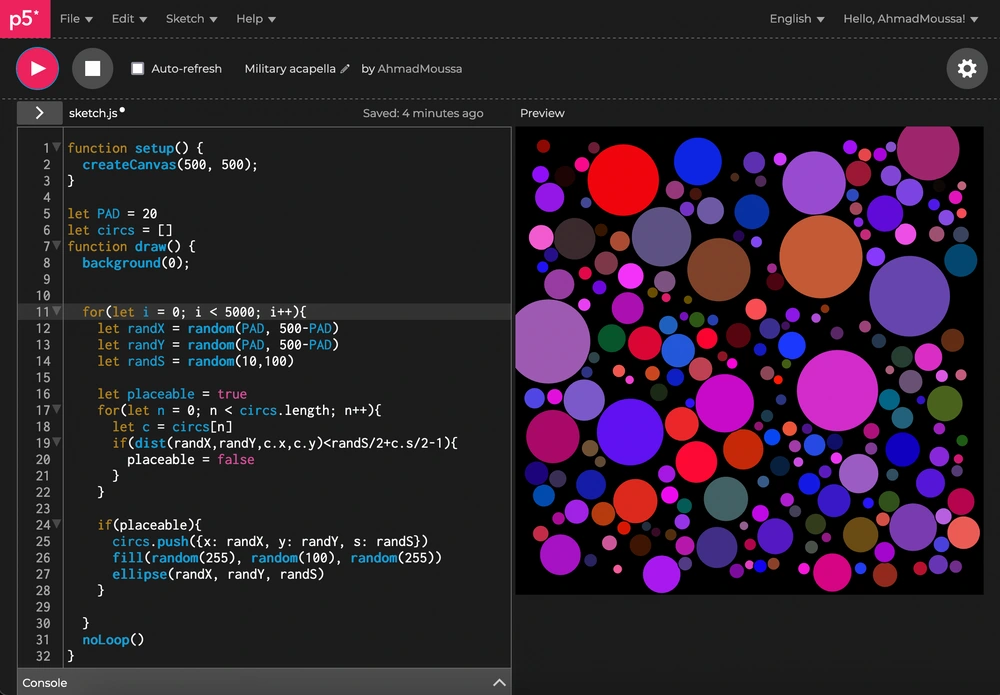
Processing является творческой средой программирования, а p5.js библиотекой JavaScript с похожими задачами в вебе. Их не следует считать одной программой. Python также используют для вычислений, обработки данных и прототипов; место исполнения и связь с графикой выбираются отдельно.
Веб может продолжать опыт выставки: человек открывает дома карту или упрощённую модель, к которой обращался на площадке. При этом нужно заново проверить управление, экран и доступность данных. Подробный выбор инструментов уже разобран в разделе о веб-проектах выше и на странице программного обеспечения.
Звуковые среды
Max/MSP, Pure Data и SuperCollider применяют для синтеза, обработки и анализа звука. Max и Pure Data используют патчи из объектов, а в SuperCollider важную роль играет код и отдельный звуковой сервер. Max также включает инструменты графики и видео Jitter.
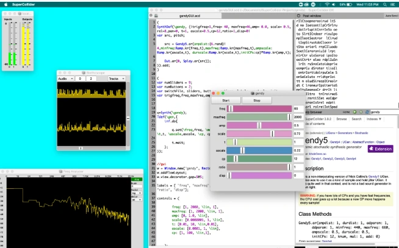
Звук можно одновременно слышать и использовать как источник данных. Например, анализатор выделяет амплитуду или частотные характеристики, а графическая система получает эти значения по согласованному каналу. Передача числового параметра по OSC не равна передаче самого аудиопотока.
Точность звуковой обработки и задержка всей установки являются разными характеристиками. Буферы, устройства, сеть и графический вывод добавляют своё время. Связь с музыкой проверяют на слух и в условиях показа, а не только по частоте кадров.
Световые консоли
grandMA2/3, Hog и ChamSys относятся к системам управления светом. Патч связывает адреса с приборами и их характеристиками; пресеты сохраняют значения; последовательности сцен организуют переходы. Здесь важны приоритеты управления: кто в данный момент задаёт яркость, цвет и положение прибора?
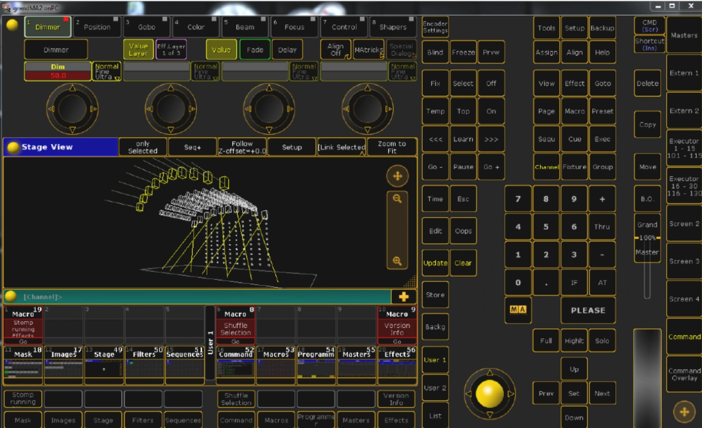
Световая система может получать команды от другой программы или следовать времени шоу. Поддержка MIDI, OSC, таймкода и сетевых протоколов зависит от конкретного оборудования и конфигурации. Нельзя исходить из того, что все консоли принимают один и тот же набор сигналов.
Для знакомства с устройством таких систем можно обратиться к grandMA3, Hog и ChamSys. Анализ звука или движения может выполняться во внешней среде, а консоль сохранять контроль над итоговым поведением света.
Предварительная визуализация шоу
Capture, Depence и Vectorworks Vision помогают подготовить показ до доступа к реальной площадке. В модели размещают сцену и приборы, а управление позволяет наблюдать световую партитуру в движении. Возможности видео и эффектов отличаются между продуктами.
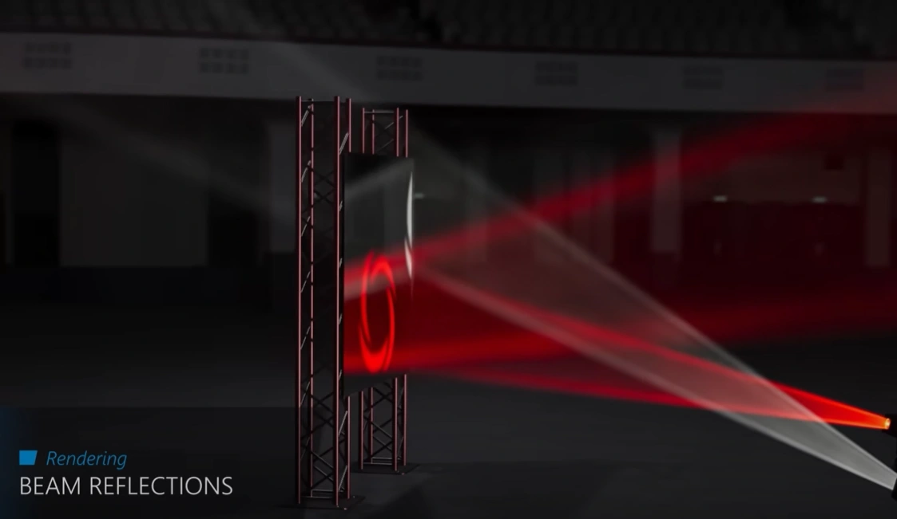
Такой предпросмотр нужен для проверки решений: попадает ли свет в нужную зону, читается ли переход, не закрывает ли конструкция важный объект. Модель не гарантирует точного совпадения с площадкой: реальные приборы, поверхности, дым и условия видимости требуют проверки.
Unreal Engine также можно использовать для моделирования сценического пространства и взаимодействия. При этом специализированный визуализатор и самостоятельно собранная сцена решают похожие задачи разными средствами. Blender тоже имеет интерактивный просмотр и рендеринг в реальном времени, поэтому отличие следует искать в рабочем процессе и средствах управления шоу, а не в формуле «Blender всегда статичен».
Среда как часть общей системы
Набор инструментов определяется тем, что проект должен принимать, вычислять и выводить. Для интерактивной установки важны три свойства: подходящая задержка, нужные способы ввода и вывода, предсказуемое поведение на площадке. Большое число программ само по себе не делает проект лучше.
Представим установку: камера передаёт изображение, TouchDesigner выделяет присутствие человека, игровая сцена получает управляющее значение, медиасервер распределяет результат по экранам. Параллельно световая система принимает согласованные команды. Это возможная архитектура; маленькому проекту может хватить одного приложения.
При сборке сначала определяют тип данных: изображение, звук, числовой параметр или команда. Затем выбирают соединение, диапазон и роль каждого компонента. Например, «передать расстояние до человека» и «передать изображение камеры» требуют разных решений.
Для числовых параметров и команд можно использовать OSC или MIDI; для изображения между совместимыми приложениями Spout/Syphon или сетевой видеопоток. DMX и Art-Net используются в световых системах. Это разные способы связи, а не взаимозаменяемые названия одного соединения.
Для обсуждения можно взять одну идею и изменить условия показа: телефон, музейный стол и концертная сцена. Какие части проекта сохранятся, а какие придётся пересобрать? Где допустима пауза, кто управляет запуском и как человек узнаёт, что система приняла его действие?